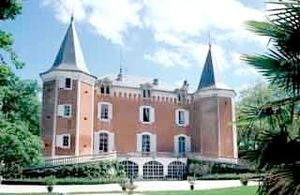
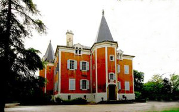
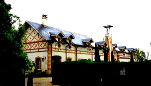
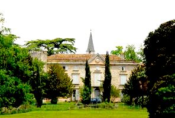
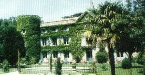

Recensement Jean-Claude Truffet
| Département | 81 — Tarn |
| Canton | Saix |
| Commune | Garrevaques |
| Type d'édifice | Château |
| Période d'origine | XIX |





Deux châteaux à Garrevaques, celui de Garrevaques du XIXe siècle, celui de Gandels du XVIIe siècle GARREVAQUES, le château était, à cette époque, la propriété d'un seigneur catholique réputé pour mener la vie dure aux pasteurs, qui se rendait à l'académie protestante de Puylaurens. Après les guerres de religion et par l'effet des alliances, les propriétaires prirent la religion réformée, et la famille du comte de Gineste-Najac apparaît à ce moment-là. Pendant la Révolution Française le château fut incendié puis vers 1800 il fut reconstruit après le retour de la paix sous le Consulat. Pendant huit mois un état major allemand occupa les lieux entraînant dégradations et mutilations. Cependant une fois de plus le malheur fut surmonté. Toujours dans la descendance c'est la XVIe génération qui a conservé et restauré cette demeure familiale. Aujourd'hui chambres d'hôtes par la famille Combes. GANDELS, la seigneurie de Gandels appartenait avec la justice haute, moyenne et basse, à l'abbaye de Soréze, qui la bailla en arrière fief le 28 juillet 1600 à Antoine de Thuile. Françoise de Thuile épousa le 13 juin 1610 et lui apporta Gandels en dot. On rencontre ensuite comme seigneur de Gandels, Jean d'Andrieu, capitaine au régiment de Champagne en 1649.
Garrevaques du XIXe siècle est situé dans la vallée du Sor, destiné à protéger la population du village, le château a été construit en 1460. Orné de quatre tours et d'un toit en tuiles canal, entouré de fosses et d'un mur d'enceinte, il avait l'aspect d'une grande bâtisse. Entièrement remanié au XIXe siècle après avoir été détruit par un incendie au cours de la Révolution, l'édifice présente trois travées à deux niveaux un étage de combles éclairé par des lucarnes sommé de frontons triangulaires avec rangée de faux mâchicoulis. Rez-de-chaussée à terrasse surélevée accès par deux rampes, la corps de logis rectangulaire coiffé d'un toit en pavillon ainsi que les tours polygonales aux toits pointus à pans multiples, en façade une tour plein cintre et à l'arrière les tours son aux angles. Gandels, le château se présente comme un corps de logis flanqué à gauche d'une tour cylindrique et des communs. Cet édifice de fondation ancienne présente cinq travées en façade et se compose d'un rez de chaussée et de deux étages. L'animation est donnée par un avant corps surmonté d'un fronton équilatéral percé d'un il-de-buf. Mais cette travée n'a pas été établie dans l'axe de la façade car l'on note trois travées à gauche et une seule à droite alors qu'il y avait assez de place pour en établir deux. Cette implantation asymétrique sur un bâtiment auquel on semble avoir tenté de donner une dimension classique, milite pour une ancienneté de l'actuel château. À l'arrière est établie une tour carrée, le château présente encore beaucoup de charme, au milieu des beaux arbres de son parc.
Famille du Comte de Gineste-Najac Famille de Jean d'Andrieu
"
Château de Guarrevaques et de Gandels.